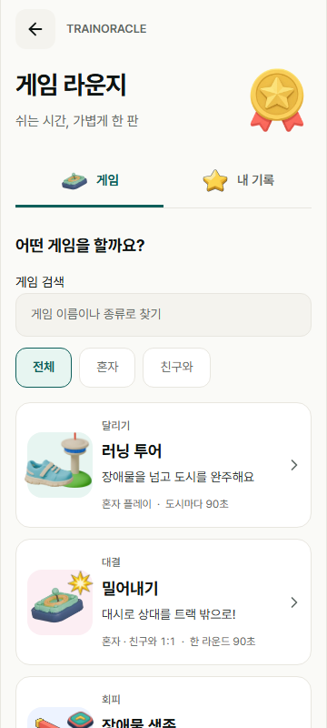
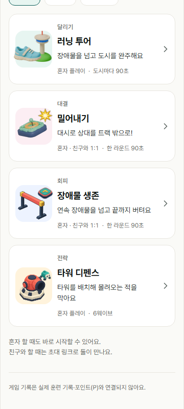
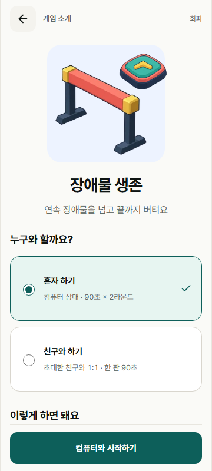
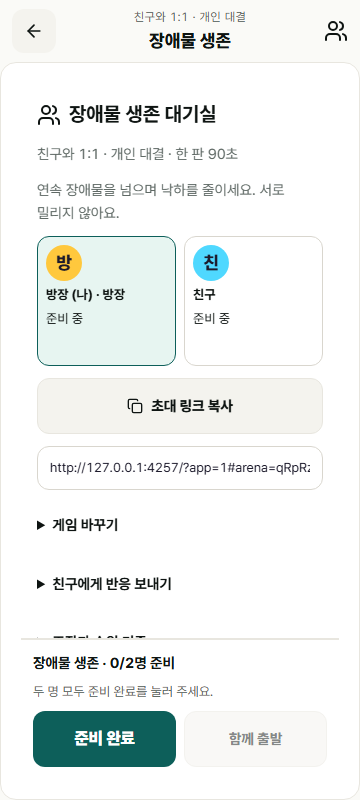
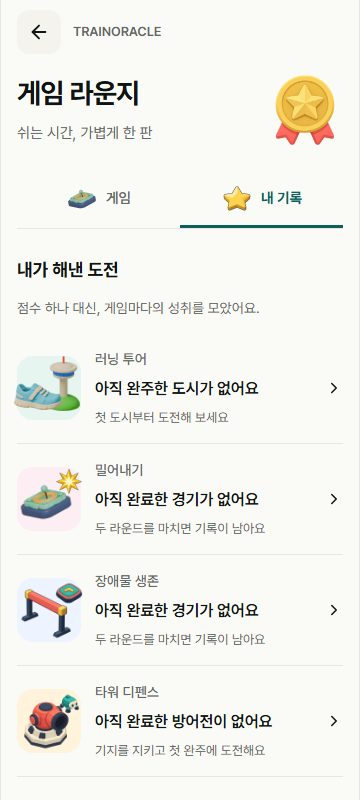
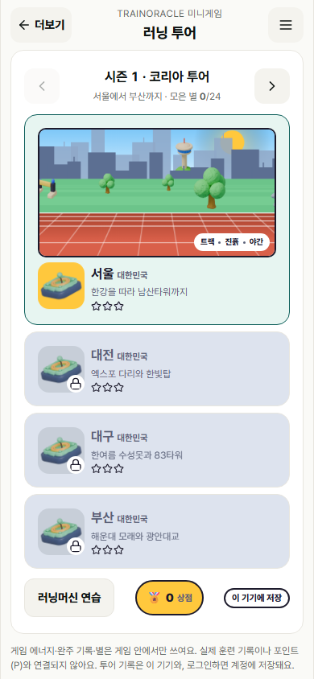
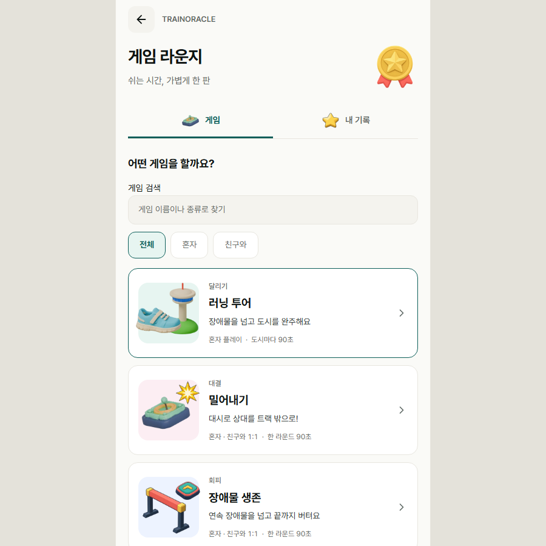

TRAINORACLE · 2026.10.16
하나의 라운지에서
게임을 고르고 바로 시작해요
게임이 계속 늘어날 것을 전제로 입구를 다시 정리했습니다. 대표 그림으로 게임을 찾고, 목표와 참가 방식을 확인한 뒤 시작합니다.
게임 라운지 열기게임 라운지 → 게임 소개 → 참가 방식 → 시작
지금 플레이할 수 있는 게임
| 게임 | 혼자 | 친구와 | 목표 |
|---|---|---|---|
| 러닝 투어 | 도시마다 90초 | — | 장애물을 넘고 도시 완주 |
| 밀어내기 | 컴퓨터와 2라운드 | 1:1 · 90초 | 더 많이 밀어내기 |
| 장애물 생존 | 컴퓨터와 2라운드 | 1:1 · 90초 | 낙하를 줄이고 장애물 회피 |
| 타워 디펜스 | 6웨이브 | — | 타워를 배치해 기지 방어 |
친구 경기는 두 명의 개인 대결입니다. 실제로 지원하는 참가 방식만 표시합니다.
구현 화면
아래는 실제 구현을 브라우저에서 촬영한 화면입니다. 휴대전화 크기는 390×844이며 실물 기기 검수와는 구분합니다.












넓은 브라우저에서도 콘텐츠 폭에 맞춰

다음 게임도 같은 입구로
게임 목록에 이름·목표·참가 방식·이미지·규칙을 등록하고 실제 플레이 화면을 연결합니다. 생성해 둔 에셋 10종을 라운지 대표 이미지와 탭에 재사용했습니다.